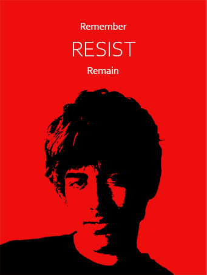

We Are Millions
Remember. Resist. Remain
Aaron Swartz's inspirational struggle for individual data sovreignty, and against centralised exclusionary walled gardens of information serves as an embodiment of what is to be expected of those of us who understand the importance of fds's principles. His tragic death is an even more pertinent reminder of the gravity of our predicament, and necessity of our cause.
Aaron was an exceptional seeker of knowledge, truth and equality. A responsible son, a loving partner, and an exemplary human being. He was the internet's own boy. One of us. He was taken from us. We must remember. We must resist. He is no longer with us. But we remain. We Are Millions
Copyright (c) 2022 isharif, this project and all art is licensed under the MIT license.